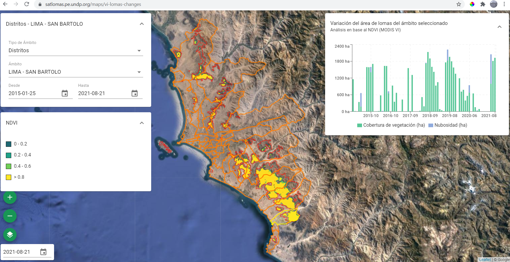
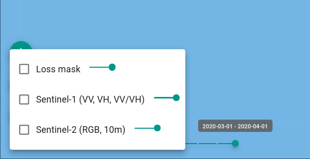
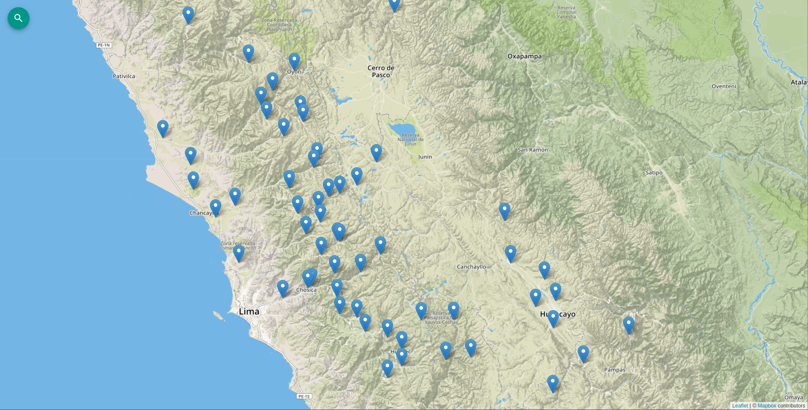
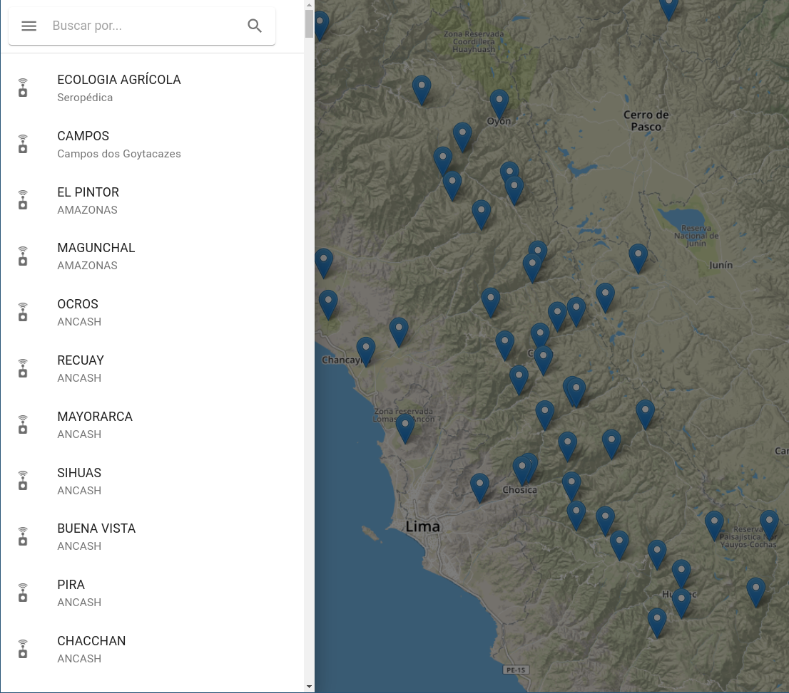
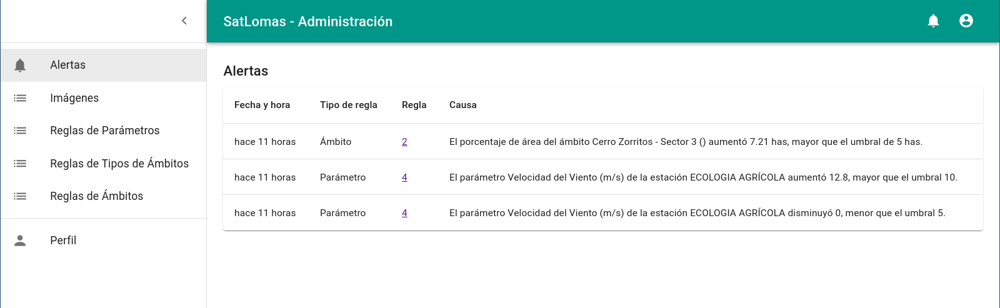
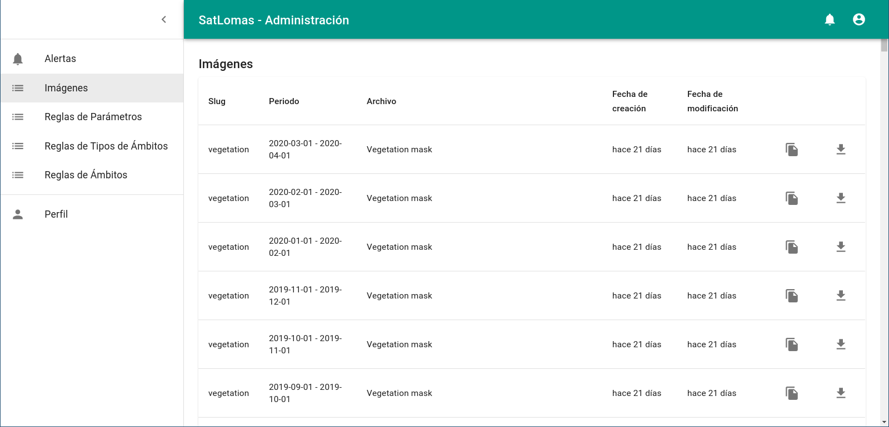
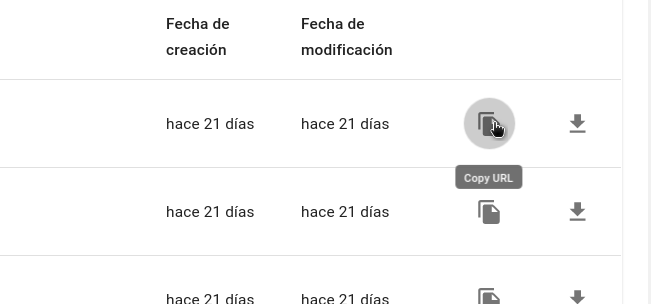

Guía de Uso¶
En esta sección se describen las diferentes vistas que conforman el frontend de la plataforma, y de qué manera se pueden utilizar las herramientas provistas para visualizar y analizar los resultados de los procesos automáticos aplicados sobre imágenes satelitales y de las estaciones meteorológicas.
Este texto está dirigido tanto para usuarios anónimos, como para usuarios registrados y aquellos con el rol de administrador.
Inicio¶
En la página de inicio se listan diferentes componentes que forman parte de la plataforma. Desde aquí se puede acceder a los mapas del módulo de Observación Terrestre, como el mapa de Cobertura Verde o el mapa de Cobertura de Loma Perdida, y por otro lado, al Mapa y el Dashboard del módulo de Estaciones Meteorológicas.

Observación terrestre¶
Cobertura Verde¶
El aplicativo de mapa de cobertura verde presenta la capa de cobertura de vegetación del ecosistema de lomas, basada en el producto de MODIS de índices de vegetación (MOD13Q1).

En la esquina superior izquierda se encuentra el control de Filtro, que permite filtrar los resultados de la serie de tiempo para un ámbito y un rango de fechas específico:
Desde el selector de Tipo de Ámbito se puede seleccionar un tipo de ámbito. Al seleccionar uno, en el mapa se actualizará la capa de ámbitos del tipo seleccionado.

También se puede ajustar la fecha de comienzo y fin de la serie de tiempo. Por defecto, se toma la primer fecha y última fecha con datos cargados en la base de datos.

Por defecto se visualiza la capa NDVI, pero también es posible visualizar en simultaneo una máscara de vegetación, resultado de la umbralización de la capa NDVI, (Vegetation mask) y una máscara de nubes (Cloud Mask), extraída del mismo producto de MODIS. Estas capas se pueden activar o desactivar haciendo clic en el ícono de Capas en la esquina inferior izquierda, y en cada casillero.
También es posible ajustar la opacidad de cada capa ajustando el control deslizante al lado del nombre de la capa.
Debajo del ícono de Capas, se encuentra el control de Selección de Períodos, que permite seleccionar una fecha en particular, para visualizar las capas de ese período en el mapa.
Filtro vs. selector de fechas
Esta selección de fecha sólo afecta a las capas visualizadas en el mapa, no a la serie de tiempo. Para ajustar las fechas de la serie de tiempo, debe hacerlo desde el control de Filtro.
Cobertura de Loma Perdida¶
La vista de cobertura de Loma Perdida funciona de manera similar al mapa de Cobertura Verde. Las capas disponibles en este caso son:
- Loss mask: Máscara de loma perdida. Resultado del producto de clasificación de cobertura de loma perdida.
- Sentinel-1: Imagen en color falso del mosaico de Sentinel-1 para el período actual. Las bandas utilizadas fueron VV, VH y la proporción VV/VH como rojo, verde y azul respectivamente.
- Sentinel-2: Imagen en color verdadero del mosaico de Sentinel-2 para el período actual.

Fusión de vistas
Próximamente esta vista será fusionada junto con la de Detección de Cambios en una única vista Detección de Cambios en Lomas.
Detección de Objetos¶
En esta vista se visualiza el producto del modelo de detección de objetos para escenas del satélite PeruSat-1.
Este producto consiste en una capa vectorial, donde se localizan objetos de interés, relacionados a actividad no monitoreada e invasión de tierras sobre las Lomas.

Objetos de interés
Por el momento el modelo detecta techos de viviendas informales. Se está desarrollando un nuevo modelo de detección con otros objetos y patrones visuales.
Fusión de vistas
Próximamente esta vista será fusionada junto con la de Covertura de Loma perdida en una única vista Detección de Cambios en Lomas.
Estaciones Meteorológicas¶
La plataforma incluye un módulo de estaciones hidrometeorológicas ligeras, donde se almacenan, analizan y visualizan mediciones recolectadas por sensores de clima acoplados a un recolector de neblina estándar, instalados en diferentes localidades o sitios del ecosistema. Estos sensores automáticos envían a través de un nodo Lorawan la información en tiempo real a la plataforma.
Mapa¶
Desde el frontend se pueden acceder a un mapa de Sitios, donde se presentan todos los sitios en donde se instalaron estaciones y se recolectaron datos en la historia, y se ubican con con marcadores en el mapa.

Al cargar, el mapa se centra de tal manera de poder mostrar todos los marcadores en pantalla. Si desea buscar un sitio por nombre o por nombre del lugar donde está instalado, haga clic en el ícono Buscar ("lupa"), en la esquina superior izquierda. Se desplegará al costado izquierdo un buscador donde podrá ingresar parte del nombre del sitio. Los resultados aparecerán automaticamente en la lista debajo del cuadro de entrada.

Si hace clic sobre un marcador en el mapa, se abrirá una ventana indicando el nombre y código de la estación configurada, y su lugar. También se mostrará, a modo de previsualización, un gráfico de serie de tiempo de un parámetro de los sensores de la estación asociada. Puede cambiar de parámetro haciendo clic sobre el selector que se encuentra arriba del gráfico.
Haciendo clic en el botón Dashboard podrá ingresar al dashboard de ese sitio seleccionado.
Dashboard¶
En esta vista se presentan una serie de gráficos de series de tiempo para cada parámetro recolectado por los sensores de la estación asociada a un sitio en particular. Por ejemplo, en los sensores instalados actualmente, se están recolectando estos parámetros:
- Altitud (msnm)
- Temperatura de Ambiente (°C)
- Presión Atmosférica (mbar)
- Temperatura Interna (°C)
- Material Particulado (PM1.0)
- Material Particulado (PM2.5)
- Material Particulado (PM4.0)
- Material Particulado (PM10.0)
- Humedad Relativa (%)
- Conteo de Tipping Bucket
- Velocidad del Viento (m/s)
- Dirección del Viento (grados)
En la esquina superior derecha se encuentran dos controles de filtrado, que determinan qué datos se graficarán en el dashboard: sitio y tiempo.
Sitio¶
Este control filtra las mediciones para un sitio en particular.
Haciendo clic, se abrirá una ventana con un selector de sitios. Al seleccionarla, se actualizaran automaticamente todos los gráficos.

Tiempo¶
Este control maneja varios aspectos del filtrado y visualización de las mediciones en el dashboard.
Posee dos modos de functionamento: * Tiempo Real: Toma las mediciones hace cierta cantidad de tiempo hasta ahora. En este modo los datos en la página se actualizan automáticamente, sin necesidad de refrescarla.

- Histórico: Toma las mediciones y las filtra en un rango de tiempo (desde-hasta). Permite trabajar con datos históricos.

Ambos modos de operación tienen dos controles en común que determinan su funcionamiento:
- Intervalo de agrupación: Define el interval en el que se agruparán los datos. Por ejemplo: minuto, hora, día, semana, mes, año.
- Función de agregación de tiempo: Define la función que se aplicará a cada grupo de mediciones por intervalo. Por ejemplo: promedio, máximo, mínimo, etc.
Tabla¶
Esta vista es muy similar al dashboard, dado que se presentan los datos de mediciones de un sitio en particular, pero en formato de tabla. A diferencia del dashboard, la tabla tiene como columna cada uno de los parámetros, y como fila cada medición

Posee los mismos controles de filtrado que el dashboard (control de Sitio y de Tiempo), y en todo momento se puede dirigir de la vista de tabla al dashboard y vice versa, mantiendo la configuración de filtro, haciendo clic en Dashboard, en la esquina superior izquierda.
Por otro lado, haciendo clic en Descargar, se podrá descargar la tabla en formato CSV (valores separados por coma), documento que puede ser abierto en otras aplicaciones como planillas de cálculo.
Usuarios¶
Aquellos usuarios que hayan sido invitados y registrados en la plataforma por un administrador, podrán acceder a un panel de usuario y al sistema de Alertas. Puede iniciar sesión en todo momento hacinedo clic en el botón Iniciar Sesión, que se encuentra en la esquina superior derecha.
Luego ingrese su nombre de usuario y contraseña, y haga clic en Ingresar.
Si no recuerda su contraseña, puede reestablecerla haciendo clic en Solicitar una nueva e ingresando la dirección de email con la que fue registrado. Al aceptar, se le enviará a su casilla un email con instrucciones para reestablecer su contraseña.
Una vez que está autenticado, notará que en el lugar donde antes estaba el botón Iniciar sesión ahora hay dos íconos:
- Alertas (campana): Indica nuevas alertas (no vistas), y muestra una lista de las últimas 5 notificaciones generadas.
- Perfil: Permite acceder al panel de usuario, al perfil de usuario y cerrar la sesión.
Reglas¶
El sistema de alertas y notificación de incidentes se basa en un conjunto de reglas definidas por el usuario. El usuario debe definir reglas para poder monitorear cambios de interés. De esta manera, el sistema no toma decisiones por su cuenta, si no que solamente informa cuando se captura una medición anormal según el criterio del usuario y permite facilmente hacer una evaluación posterior acerca de los cambios registrados.
Dado las naturalezas de los datos que se procesan y cargan en la plataforma, tnato dle módulo de observación terrestre (productos del procesamiento de imágenes satelitales) y del módulo de estaciones meteorológicas (mediciones de sensores terrestres), el sistema define 3 tipos de reglas:
- Reglas de parámetro
- Reglas de tipo de ámbito
- Reglas de ámbito
A continuación se describen cada uno de ellos, y se detalla como el usuario puede listar, definir, modificar o eliminar reglas.
Reglas de Parámetro¶
Las Reglas de Parámetro aplican a cambios relacionados a un parámetro de una estación meteorológica.

Una regla de parámetro se define con los siguientes atributos:
- Estación: La estación sobre la cual aplica la regla. Este campo puede ser vacío, en cuyo caso se aplicará a cualquier estación.
- Parámetro: El parámetro sobre el cual aplica la regla.
- Valor mínimo y máximo: Define el rango de valores máximos permitidos para el parámetro de la estación. Si se observa una medición por fuera de esta rango, se creará una alerta.
- ¿Es absoluto?: Determina si el rango válido de valores es en términos absolutos o relativos con respecto a la medición anterior (del mismo parámetro y estación).

Reglas de Ámbito¶
Las Reglas de Ámbito aplican a cambios de cobertura en un ámbito en particular.

Una regla de ámbito se define con los siguientes atributos:
- Ámbito: El ámbito sobre el cual aplica la regla. Este campo puede ser vacío, en cuyo caso se aplicará a cualquier ámbito.
- Tipo de Cobertura: El tipo de cobertura en el que aplica la regla. Por el momento hay dos opciones: Vegetación en Lomas (cmabios de Cobertura Verde) y Pérdida de Loma (cambios de Cobertura de Loma Perdida). También es posible seleccionar [Cualquiera] para que aplique sobre cualquiera de los dos tipos.
- Tipo de Cambio: Determina si el rango de valores es en términos de Área o Porcentaje de área. Utilizar Porcentaje permite definir una regla en términos de area relativos a la superficie de los ámbitos.
- Valor mínimo y máximo: Define el rango de valores permitidos. Si el tipo de cambio es Area, los valores representan hectáreas. Si el tipo de cambio es Porcentaje, los valores son porcentajes (entre 0 y 100).
Reglas de Tipo de Ámbito¶
Las Reglas de Tipo de Ámbito aplican a cambios de cobertura en todos los ámbitos de un tipo de ámbitos.

Una regla de tipo de ámbito se define con los siguientes atributos:
- Tipo de Ámbito: El tipo de ámbito sobre el cual aplica la regla. Este campo puede ser vacío, en cuyo caso se aplicará a cualquier tipo de ámbito.
- Tipo de Cobertura: El tipo de cobertura en el que aplica la regla. Por el momento hay dos opciones: Vegetación en Lomas (cmabios de Cobertura Verde) y Pérdida de Loma (cambios de Cobertura de Loma Perdida). También es posible seleccionar [Cualquiera] para que aplique sobre cualquiera de los dos tipos.
- Tipo de Cambio: Determina si el rango de valores es en términos de Área o Porcentaje de área. Utilizar Porcentaje permite definir una regla en términos de area relativos a la superficie de los ámbitos.
- Valor mínimo y máximo: Define el rango de valores permitidos. Si el tipo de cambio es Area, los valores representan hectáreas. Si el tipo de cambio es Porcentaje, los valores son porcentajes (entre 0 y 100).
Alertas¶
Cada vez que se carguen mediciones nuevas en la base de datos, se ejecuta el motor de reglas, para determinar si se deben generar nuevas alertas.
En este momento, las condiciones para que se dispare el motor de reglas son las siguientes:
- Se procesó y cargó un nuevo producto del modelo de Cobertura Verde. Frecuencia: Una vez por mes
- Se procesó y cargó un nuevo producto del modelo de Cobertura de Loma Perdida Frecuencia: Una vez por mes
- Se procesó y cargó un nuevo producto del modelo de Detección de Objetos Frecuencia: Depende de la frecuencia de los pedidos de escenas de PeruSat-1 a CONIDA.
- Se cargó una nueva medición de una estación meteorológica Frecuencia: Cada 15 minutos
El motor de reglas recorre, para todos los usuarios, cada una de las reglas definidas, y verifica si la nueva medición rompe esa regla. Si esto sucede, se crea una alerta y se notifica.
Las alertas generadas se listan en la sección Alertas del Panel de Usuario, donde se detalla la fecha en la que ocurrió la notificación, la regla afectada y una descripción de la causa de la alerta.

A continuación se describen diagramas de flujo acerca del funcionamiento del motor de reglas.
Diagrama de verificación de regla¶
Este es un diagrama del algoritmo de verificación de una regla en particular. El motor realiza este procedimiento para cada regla y usuario.
Diagrama para reglas de parámetro¶
Diagrama que describe como se filtran las mediciones para una regla de parámetro.
Diagrama para reglas de tipo de ámbito¶
Diagrama que describe como se filtran las mediciones para una regla de tipo de ámbito.
Diagrama para reglas de ámbito¶
Diagrama que describe como se filtran las mediciones para una regla de ámbito.
Imágenes¶
En la sección Imágenes del Panel de Usuario se listan las imágenes ráster, producto de los procesos automáticos del módulo de observación terrestre (cobertura verde, loma perdida, etc). En la tabla figura el período correspondiente al producto y el nombre de la imagen.

Desde esta lista se pueden descargar en formato GeoTIFF hacinedo clic en el ícono de Descarga. También se puede obtener una URL del servidor XYZ de tiles, para poder incorporar esa imagen como capa en otras aplicaciones GIS, como QGIS o Leaflet.

Perfil¶
En la sección Perfil, el usuario puede:
- Modificar su dirección de e-mail
- Activar o desactivar el envío de notificaciones de alerta por e-mail
- Reestablecer la contraseña

Administradores¶
Los administradores tienen la capacidad de registrar nuevos usuarios y administradores, revocar el acceso a usuarios existentes, administrar los ámbitos y las estaciones meteorológicas.
Puede acceder al panel administrador de SatLomas ingresando aquí:
Para entrar deberá ingresar el mismo nombre de usuario y contraseña con la que ingresa al panel de usuario de SatLomas.
Panel de administración¶
Desde el panel de administración podrá acceder a los diferentes modelos de las aplicaciones internas de la plataforma. Muchas de ellas son de solo lectura ya que no están pensadas para ser modificadas desde el panel administador, pero a efectos de depuración y testeo se mantuvieron.

Usuarios¶
Desde la sección Usuarios puede crear nuevos usuarios, modificar alguno existente o desactivarlo.

Un usuario tiene 2 tipos de permisos:
- Activo: Determina si el usuario está activo o no. Puede desmarcar esta opcion sobre un usuario existente para desactivarlo en vez de borrarlo.
- Es staff: Indica si el usuario puede entrar al sitio de administrador. Un administrador tiene este casillero activado.

En caso de querer registrar un nuevo usuario, deberá escribir un nombre de usuario y una contraseña.
Ámbitos¶
En la sección de Ámbitos (Scopes) se pueden listar, modificar, eliminar o agregar nuevos ámbitos.

Al editar un ámbito, o crear uno nuevo, se puede asignar un nombre y tipo de ámbito, y dibujar sobre un mapa un multipolígono para la geometría. También es posible cargar un archivo vectorial en formato GeoJSON. Este archivo vectorial debe tener un único feature con un multipolígono o polígono de geometría.
Estaciones meteorológicas¶
En la sección de Estaciones Meteorológicas (Stations) se pueden listar, modificar, eliminar o agregar nuevas estaciones meteorológicas (Station) y nuevos sitios (Site).

Al momento de crear un nuevo sitio, es necesario asegurarse que la estación esté creada primero. Cada estación tiene un código unívoco que las identifica. La plataforma solamente cargará los datos que recibe si reconoce el código, dado que los datos se asocian exactamente a una estación.
El código (code) de la estación debe coincidir con el código asignado a los sensores al momento de la carga de mediciones.
También se incluye un campo de metadatos en formato JSON, en caso de que sea necesario guardar información externa a la plataforma.

Al editar o crear un Sitio, se le debe asignar un nombre, las coordenadas geográficas (en proyección WGS84), y opcionalmente asociarlo a una estación cargada. Esta asociación puede hacerle luego en una edición posterior. También existe la posibilidad de agregarle atributos opcionales relacionados con el sitio.

Traslado de estaciones¶
Dado que la estaciones pueden ser trasladadas de un sitio a otro, la plataforma ofrece un mecanismo que permite realizar el traslado, sin pérdida de continuidad y consistencia de los datos a lo largo del tiempo.
Suponiendo que se quiere trasladar una estación del sitio "A" al sitio "B", a modo de ejemplo se procedería de la siguiente manera:
- Se desconecta y desacopla la estación ubicada en el sitio A
- En el administrador, se edita el sitio "A" y se desasocia la estación. Este paso se realiza para que, al momento de encender la estación ya ubicado en el sitio B, no se carguen erroneamente datos asociados al sitio A.
- Se traslada la estación al sitio B.
- En el administrador, se crea el sitio B (si no existía), y se asocia la estación al sitio B.
- Se enciende la estación, ya conectada a la red LoraWan.
Es importante asegurarse que la estación esté desasociada del sitio original antes del traslado, y por otro lado, que la estación ya esté asociada al sitio nuevo antes de volver a conectarse. De esta manera, se podrá asegurar que los datos estén cargados correctamente y no haya pérdida de información durante el proceso.
En caso de interrupciones de conectividad o de energía en las estaciones, la plataforma no se verá afectada y volverá a recolectar datos automáticamente.
Auditoría¶
La plataforma tiene integrado un sistema de auditoría para todas las acciones realizadas por usuarios y por los procesos automáticos. Podrá consultarla yendo a la Entradas de registro (en Audit Log).